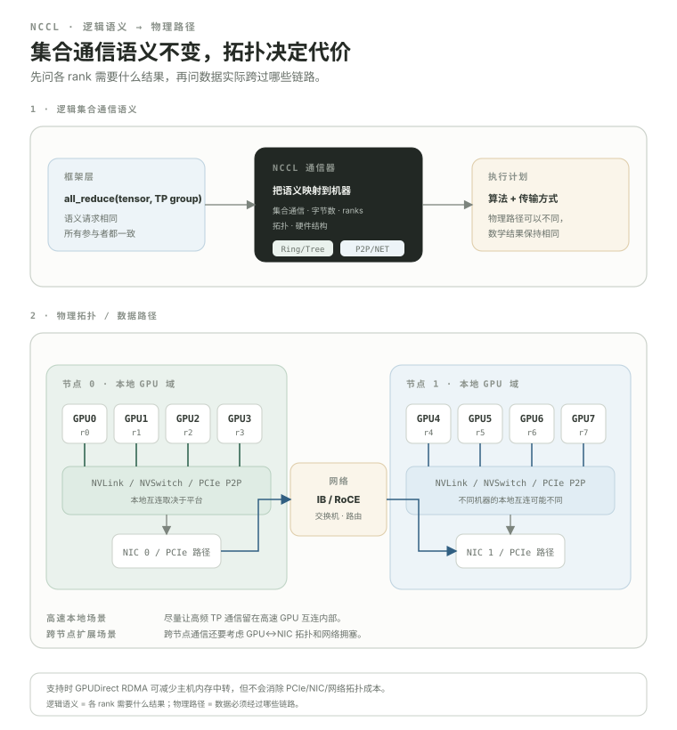

NCCL 与拓扑：同一个 all-reduce，为什么换台机器就可能差很多？
上一课只讲 collective 的语义。但真实系统还要回答：这些字节到底走哪条链路？四张 GPU 是通过 NVLink 连着，还是绕 PCIe？跨节点时 GPU 数据是不是要先经过 host memory 中转？NCCL 的价值，就是把 collective 语义映射到真实 GPU 拓扑和通信链路上，并选择合适的通信算法与 transport（传输后端：负责底层设备或网络数据移动的实现层）。
- 解释 NCCL 是什么，也解释它不是什么。
- 区分 NVLink/NVSwitch、PCIe、InfiniBand/RoCE 这些链路大致处在什么层级。
- 把“collective semantics”和“NCCL 实际怎样走硬件”分成两层思考。
- 用环形算法的直觉理解 all-reduce 为什么能拆成 reduce-scatter + all-gather。
- 知道 NCCL 并不永远固定用 ring；现代版本会根据集合通信、拓扑、消息大小和平台选择环形、树形、NVLS（NVLink Sharp：NCCL 在支持的平台上可选择的 NVLink/NVSwitch 集合通信加速算法族）等算法。
- 理解 GPUDirect RDMA（GPU 直连远程内存访问：让网络设备更直接地读写 GPU memory，以减少 host memory 中转）为什么能降低跨节点 GPU 通信的数据搬运开销。
- 知道如何用
nvidia-smi topo -m、NCCL_DEBUG=INFO和 NCCL 通信基准工具开始定位通信问题。
NCCL 不是“网络”，而是一套针对 NVIDIA GPU 的通信库。
NVIDIA 官方把 NCCL 定义为面向 GPU 间通信、具备拓扑感知能力的通信库。它提供 AllReduce、Broadcast、AllGather、ReduceScatter、AllToAll，以及 point-to-point send/recv 等通信原语。
PyTorch torch.distributed 使用 NCCL 后端时，你调用的是 PyTorch collective API；底层 CUDA GPU 通信由 NCCL communicator 承担。最重要的是：API 的数学结果不因为物理路径改变，执行代价却会改变。
先分清“我要什么结果”，再追“这些字节数据实际跨过哪些链路”。
同一个 all_reduce(tensor, TP group)，在程序语义上始终要求参与各个 rank 得到归约后的 tensor；但 NCCL 会结合 collective、message size（消息大小：一次 collective 中每个 rank 需要参与传输的数据量）、rank 数量、拓扑和平台能力选择实际执行方案。下面把逻辑通信语义与物理数据路径放在同一张图里：

因此“8×GPU”远远不够描述一台训练机器。8 张卡之间是全连接 NVSwitch、部分 NVLink，还是只靠 PCIe，会直接改变高频 Tensor Parallel 集合通信的代价。
Ring（环形算法：让各 rank 沿一个逻辑环与邻居分块交换数据）的核心，是让每个 rank 持续参与传输，而不是把流量集中到一个中心节点。
reduce-scatter
then all-gather
可以把 ring all-reduce 先理解成两阶段：
reduce-scatterone reduced shardall-gather每个 rank 分块发送/接收，最终既完成归约，又让所有 rank 得到完整结果。Ring 的一个重要直觉是链路可以持续流式搬大块数据，因此对大消息常有很好的带宽利用。
但不要记成“NCCL all-reduce = ring”。NCCL 会根据平台、拓扑、集合通信和 message size 自动选择可用算法；现代版本的算法族不止 Ring / 树形算法，还包括 NVLS 等平台相关路径。
为什么还需要 Tree（树形算法：按层级聚合和分发数据，以减少通信阶段数）？因为延迟、带宽和 rank 数的权衡不同。
不要自己提前指定 NCCL_ALGO=Ring 当“优化”。NCCL 默认会自动选择算法。只有 benchmark 与 topology 证据表明默认选择不理想，才有理由干预算法或协议。
同一个 GPU↔GPU 逻辑通信，可能落到完全不同的物理路径。
这就是为什么“跨节点 TP 通常比单机高速 GPU fabric 上的 TP 贵得多”是很自然的系统结论：layer 内高频 activation 分片现在要穿过 GPU↔NIC 路径与网络。
GPUDirect RDMA 的关键问题：GPU 数据能不能更直接地到 NIC？
没有高效 GPU 直连路径时，可以先这样理解：
GPUDirect RDMA 的核心目标，是让第三方 PCIe 设备（典型是 NIC）能通过 DMA（直接内存访问：设备在较少 CPU 搬运参与下直接读写内存的数据移动机制）更直接地访问 GPU device memory，减少不必要的 host memory 中转和 CPU copy：
现实路径仍受 PCIe 拓扑、GPU/NIC affinity、IOMMU（输入输出内存管理单元：为设备 DMA 提供地址转换和访问隔离的硬件单元）、驱动、NIC 能力与平台配置影响。“支持 GPUDirect RDMA”不等于任何 GPU 到任何 NIC 都能自动跑满，也不意味着网络与拓扑代价消失。
这也是以后读 vLLM KV Connector / NIXL 时会再次遇到的基础：GPU 上已经算好的 KV，跨节点怎么直接送到另一张 GPU，而不是不必要地绕 host memory 中的临时缓冲区。
先看机器拓扑，再谈通信性能。
nvidia-smi topo -mGPU0 GPU1 GPU2 GPU3 NIC0 GPU0 X NV.. ... ... ... GPU1 NV.. X ... ... ... GPU2 ... ... X NV.. ... GPU3 ... ... NV.. X ... NIC0 ... ... ... ... X # 实际输出会用 NV#, PIX/PXB/PHB/SYS 等标签描述路径。 # 不要背这个玩具表；重点是学会先确认“谁离谁近”。
当 NCCL 性能异常时，GPU↔GPU 与 GPU↔NIC affinity 是非常值得先检查的层级。多 NIC 系统里，错误的 NIC 选择可能让流量绕远路。
NCCL 能告诉你它发现了什么，以及它准备怎么通信。
NCCL_DEBUG=INFO torchrun ...
# 需要更聚焦时还可配合 NCCL_DEBUG_SUBSYSDebug 环境变量很多，但不要把“一股脑 export 一百个 NCCL_*”当调优。先用 INFO 观察，再围绕明确问题收窄。
训练慢之前，先问：机器的集合通信本身到底能跑多快？
NVIDIA 的 nccl-tests（NCCL 通信基准工具：独立测量 NCCL collective 的延迟和带宽）最常见的用途之一就是测 all-reduce：
./build/all_reduce_perf ...关注不同 message size 下的时间和 bandwidth。多节点通常通过 MPI（消息传递接口：HPC 中常见的进程间消息传递标准）或集群 launcher 启动。具体命令取决于环境，不要直接照抄别人的网卡参数。
为什么先测它？如果 nccl-tests 已经明显跑不满机器应有的通信水平，那么训练框架里的 all-reduce 慢很可能只是症状；你应该先处理驱动、拓扑、NIC/RDMA、容器权限或网络配置。
8 节点 × 8 GPU，不应该假装成 64 张卡完全等价互连。
真实集群天然有层级：
NVLink / PCIeNIC + networkcollective strategyNCCL 的拓扑感知能力就是在利用这些差异。现代平台还可能有 NVSwitch/NVLS 等额外集合通信加速能力。初学阶段不用背算法名，先记住：高效集合通信必须尊重硬件层级。
并行策略不是只看“有多少 GPU”，还要看哪些 GPU 彼此最接近。
这就是为什么 Megatron 的并行 rank 映射、communication overlap、distributed optimizer 不能脱离集群 topology 单独评价。接下来进入 05 Megatron 后，我们会把这套硬件/通信地基真正套到 TP、流水线并行、DP 上。
看到通信慢，先画数据路径。
本课出现的缩写与术语
正文以自然中文为主，必要的源码缩写与专名可以保留；完整英文名集中放在这里，便于继续阅读英文文档与源码。
| 缩写 | English full name | 中文名 | 本课怎么理解 |
|---|---|---|---|
NCCL | NVIDIA Collective Communications Library | NVIDIA 集体通信库 | GPU 集群中常用的 collective / P2P 通信软件库。 |
GPU | Graphics Processing Unit | 图形处理器 | 大模型训练与推理中执行 GEMM、Attention 等高并行计算的主要设备。 |
PCIe | Peripheral Component Interconnect Express | 高速外设组件互连 | CPU、GPU、NIC 等设备之间常见的主机互连总线。 |
RoCE | RDMA over Converged Ethernet | 基于融合以太网的 RDMA | 在以太网上承载 RDMA 语义的网络技术。 |
NVLS | NVLink Sharp | NVLink Sharp 算法 | NCCL 在支持的平台上可选择的 NVLink/NVSwitch 相关 collective 加速算法族。 |
RDMA | Remote Direct Memory Access | 远程直接内存访问 | 允许远端内存传输减少 CPU 数据搬运参与的网络访问机制。 |
P2P | Peer-to-Peer | 点对点通信 | 两个 peer/rank 之间直接发送和接收数据的通信模式。 |
CUDA | CUDA | NVIDIA GPU 并行计算平台 | 官方产品名，没有应当强行展开的现代英文全称；本课按 CUDA 平台/编程栈理解。 |
API | Application Programming Interface | 应用程序编程接口 | 软件组件之间约定的调用接口；源码阅读时先看 contract，再看实现。 |
TP | Tensor Parallel | 张量并行 | 把单层内部的大矩阵/计算沿张量维度分到多个 ranks。 |
DP | Data Parallel | 数据并行 | 不同 replica 处理不同数据，再同步训练状态；它主要切数据而不是切单层模型。 |
VRAM | Video Random Access Memory | 显存 | 工程语境里常泛指 GPU device memory；不等于特指 HBM。 |
HBM | High Bandwidth Memory | 高带宽内存 | 数据中心 GPU/加速器常见的高带宽设备内存技术。 |
GDDR | Graphics Double Data Rate | 图形双倍数据速率存储器 | 很多消费级/工作站 GPU 使用的显存技术。 |
NIC | Network Interface Card | 网络接口卡 | 主机连接网络 fabric 的硬件接口。 |
CPU | Central Processing Unit | 中央处理器 | 主要承担 Python 控制流、调度、数据准备与部分通信控制。 |
AI | Artificial Intelligence | 人工智能 | 本课程讨论的大模型训练、推理与系统基础设施所服务的计算领域。 |
DMA | Direct Memory Access | 直接内存访问 | 设备在较少 CPU 搬运参与下直接读写内存的数据移动机制。 |
IOMMU | Input-Output Memory Management Unit | 输入输出内存管理单元 | 为设备 DMA 提供地址转换和访问隔离的硬件单元，影响设备内存映射与直通路径。 |
KV | Key-Value | 键-值 | 自回归 Attention 需要复用的历史 Key/Value 状态。 |
NIXL | NVIDIA Inference Xfer Library | NVIDIA 推理传输库 | 为 AI 推理框架提供跨多类 memory/storage 的点对点数据传输抽象。 |
MPI | Message Passing Interface | 消息传递接口 | HPC 中常见的进程间消息传递标准；理解 NCCL 与传统分布式通信生态时会遇到。 |
GEMM | General Matrix Multiply | 通用矩阵乘法 | Linear、MLP 等大量计算最终会落到的矩阵乘核心操作。 |
为什么要模型并行：从一张 GPU 放不下 70B 开始。